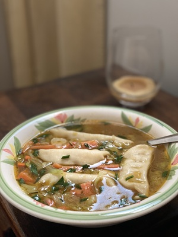

.png "Caring Kitchen Logo")
Simple Soup

For those low or no energy days, this soup is more of an idea than a recipe. It uses pre-cooked, frozen, and or canned anything to come together in 5 minutes. I used chicken stock and leftover veggies with these: mini wontons